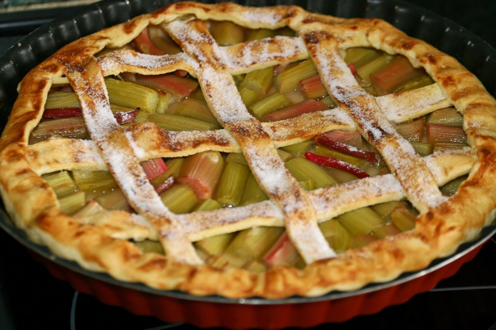

My Favorite Recipe:
The Rhubarb Pie

Ingredients (for 8 pieces) :
- 20cl of heavy cream
- 75g of sugar
- 1 shortcrust pastry
- 500g of rhubarb
- 2 eggs
- 1 teaspoon cinnamon (optional)
Cooking Instructions :
- Preheat your oven to 200°C (thermostat 6-7). Wash the rhubarb stalks. Roll out the shortcrust pastry in the pie dish and prick the bottom with a fork.
- Cut the rhubarb (without peeling it) into small cubes and spread it over the dough.
- Mix together the 2 eggs, sugar, cream, and cinnamon (optional). Spread the mixture over the rhubarb.
- Bake for about 30 minutes.